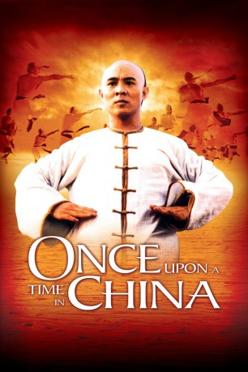

IMDB-Wertung: 7.4 / 10
IMDB-Wertung: 7.4 / 10  Metascore:
Metascore: 
Erster Teil der Wuxia-Hongkongreihe Once Upon a Time in China mit Jet Li in der Hauptrolle. Jet Li spielt den Nationalhelden Wong Fei Hung, der im China Ende des 19. Jahrhunderts gegen die Engländer antritt.
Alternativ: Es war einmal in China - Schwarzen Tiger von Hongkong, Die
 IMDB-Wertung: 7.4 / 10 Metascore:
Erster Teil der Wuxia-Hongkongreihe Once Upon a Time in China mit Jet Li in der Hauptrolle. Jet Li spielt den Nationalhelden Wong Fei Hung, der im China Ende des 19. Jahrhunderts gegen die Engländer antritt.
Jahr: 1991
Dauer: 133 Minuten
FSK: 16
Land: Hong-Kong Studio: Splendid FilmTonspuren:
Untertitel:
Auflösung: 1080p (1920x816) Größe: 9717 MB
Genre: Action, Drama, Abenteuer, Geschichte, Biographie
Regisseur:  Hark Tsui
Hark Tsui
Drehbuch: Yiu-ming Leung
Soundtrack:
Darsteller:
 Jet Li als Wong Fei Hung
Jet Li als Wong Fei Hung Biao Yuen als
Biao Yuen als  Rosamund Kwan als Aunt Yee
Rosamund Kwan als Aunt Yee Jacky Cheung als
Jacky Cheung als  Kent Cheng als Porky Lang
Kent Cheng als Porky Lang Wu Ma als
Wu Ma als  Cheung-Yan Yuen als Yim's Opponent
Cheung-Yan Yuen als Yim's Opponent Shi-Kwan Yen als Iron Robe Yim
Shi-Kwan Yen als Iron Robe Yim Shun Lau als
Shun Lau als  Xin Xin Xiong als
Xin Xin Xiong als  Foo-Wai Lam als
Foo-Wai Lam als Datei: X:\HD-Eastern-Collections\Once Upon a Time in China\Once Upon a Time in China 1 (1991, FSK16, 1920x816).mkv seit 04.12.2017
Festplatte: HD Eastern+Western
 Alle Filme aus Gruppe 'HD-Eastern-Collections\Once Upon a Time in China'
Alle Filme aus Gruppe 'HD-Eastern-Collections\Once Upon a Time in China'